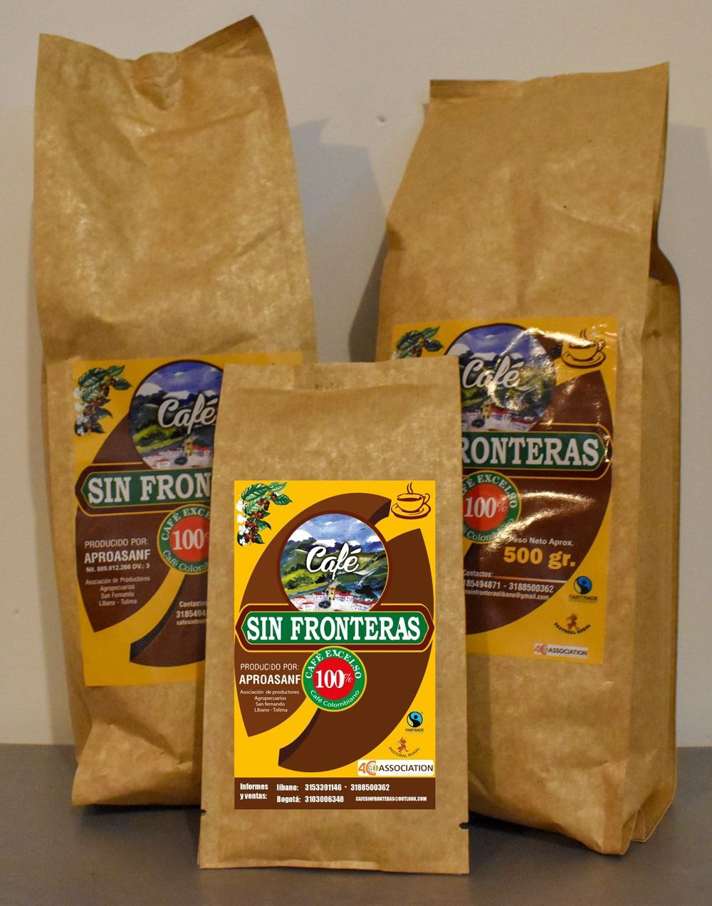

Desde la tierra fértil del corregimiento San Fernando, te traemos un café que cuenta historias de tradición, esfuerzo y sabor auténtico. Cada grano es cultivado por manos campesinas con amor por la tierra y compromiso por la calidad.
Ofrecemos café 100% colombiano, cultivado a más de 1.600 m s.n.m. en las montañas de la Cordillera Central, en un entorno privilegiado por su riqueza natural. En el corregimiento de San Fernando, se produce un café excepcional gracias a la combinación única de suelos de cenizas volcánicas del Nevado del Ruiz, una abundante oferta hídrica y un clima ideal para el cultivo del grano.
Nuestra producción se basa en la variedad Castillo, reconocida por su excelente adaptación a las condiciones locales y su alta calidad en taza. El café es cultivado por familias campesinas organizadas en la Asociación Aproansanf, quienes cuidan cada etapa del proceso con profundo respeto por la tierra, la tradición y el consumidor.
Manejamos el café como un alimento, conservando la trazabilidad y la inocuidad, aplicando principios de producción limpia. Desde el cultivo hasta el beneficio, tostión, empaque y distribución, mantenemos una cadena productiva transparente, comprometida con la sostenibilidad y el bienestar comunitario.
1 LIBRA, ½ LIBRA Y ¼ DE LIBRA
TOSTADO ARTESANALMENTE
SECO CONVENCIONAL
TIPO EXPORTACIÓN
Variedad: Castillo
Perfil: Cultivado a 1.480 m s.n.m., en un clima templado entre los 18 y 22 °C, nuestro café variedad Castillo se caracteriza por una taza limpia con aroma envolvente, acidez media, y un cuerpo sedoso y balanceado. El entorno natural y el cuidado en el manejo del cultivo permiten que los matices del grano se expresen con claridad, conservando el carácter dulce y el perfil floral típico de la región.
Producción: Nuestra producción se fundamenta en prácticas sostenibles, sin el uso de agroquímicos, priorizando la inocuidad del café como alimento y la trazabilidad de todo el proceso, desde el cultivo hasta el consumidor final.
La recolección se realiza de forma manual y selectiva durante las cosechas de mitaca en noviembre-diciembre y abril-mayo, asegurando que solo los granos maduros sean procesados. Posteriormente, el café es despulpado y secado artesanalmente al sol, lo que conserva mejor sus características naturales y reduce el impacto ambiental.
Mantenemos el control directo de cada etapa productiva: siembra, cosecha, beneficio, secado, tostión y empaque se realizan dentro del corregimiento de San Fernando, garantizando una cadena de valor corta, limpia y de calidad. Este enfoque no solo preserva el sabor auténtico del café, sino que fortalece la economía local y el vínculo entre el productor y el consumidor.
